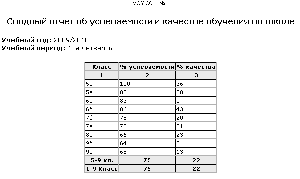

|
Сводный отчёт об успеваемости и качестве обучения по школе
|
| Процент успеваемости класса – рассчитывается путём сложения всех учащихся, которые учатся на 3, 4, 5, и делением этой суммы на общее количество учащихся в классе.
|
| Процент качества класса – рассчитывается путём сложения всех учащихся, которые учатся на 4 и 5, и делением этой суммы на общее количество учащихся в классе.
|
| (Общее кол-во учащихся) = (Все учащиеся) - (Освобождённые) - (Не получившие отметок).
|
